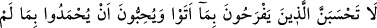

ÖLÜM VE HESAP
185. Her canlı ölümü tadacaktır. Ve ancak kıyâmet günü yaptıklarınızın karşılığı
size tastamam verilecektir. Kim cehennemden uzaklaştırılıp cennete konursa o,
gerçekten kurtuluşa ermiştir. Bu dünya hayatı ise aldatma metâından başka bir şey
değildir.
186. Andolsun ki, mallarınız ve canlarınız konusunda imtihana çekileceksiniz;
sizden önce kendilerine kitap verilenlerden ve müşriklerden birçok üzücü sözler
işiteceksiniz. Eğer sabreder ve takvâ gösterirseniz, muhakkak ki bu, (yapılacak)
işlerin en değerlisidir.
187. Allah kendilerine kitap verilenlerden; “Onu mutlaka insanlara
açıklayacaksınız, onu gizlemeyeceksiniz” diyerek söz almıştı. Onlar ise bunu kulak
ardı ettiler, onu az bir dünyalığa değiştiler. Yaptıkları alış-veriş ne kadar kötü!
188. Sanma ki ettiklerine sevinen, yapmadıkları ile övülmek isteyenler, evet,
sanma ki onlar azaptan kurtulacaklardır. Onlar için elem verici bir azap vardır.
189. Göklerin ve yerin hükümranlığı Allah’ındır. Allah’ın her şeye gücü yeter.
“Her canlı ölümü tadacaktır.” Can, en küçük bir ölüm sebebi ile çıkar, bedenden
ayrılır. Buradaki “tatmak” ifadesi, azlıktan kinâye olarak kullanılmıştır. Bu ifade,
tasdik edenler için vaad, yalanlayanlar için tehdittir. Şöyle ki: Bu dünya hayatından
sonra, iyi davrananların kötü davrananlardan ayrılacağı ve herkese lâyık olduğu
karşılığın tam olarak verileceği bir başka hayat bulunduğunu kinâye yolu ile